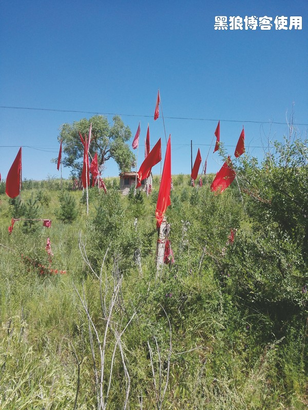
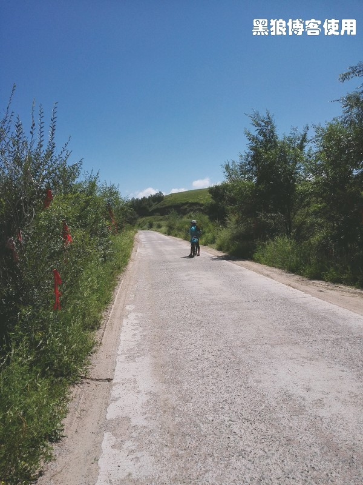
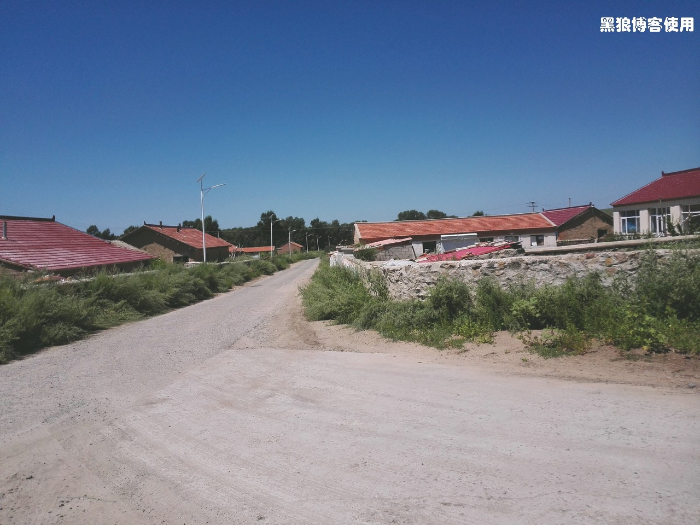
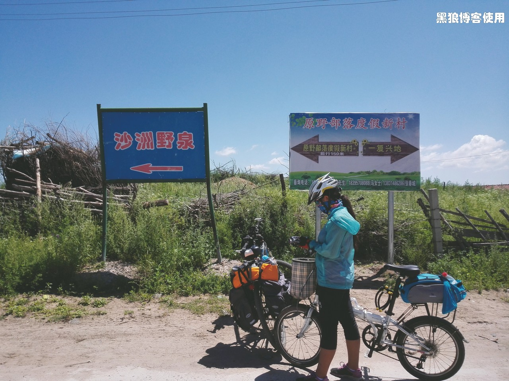
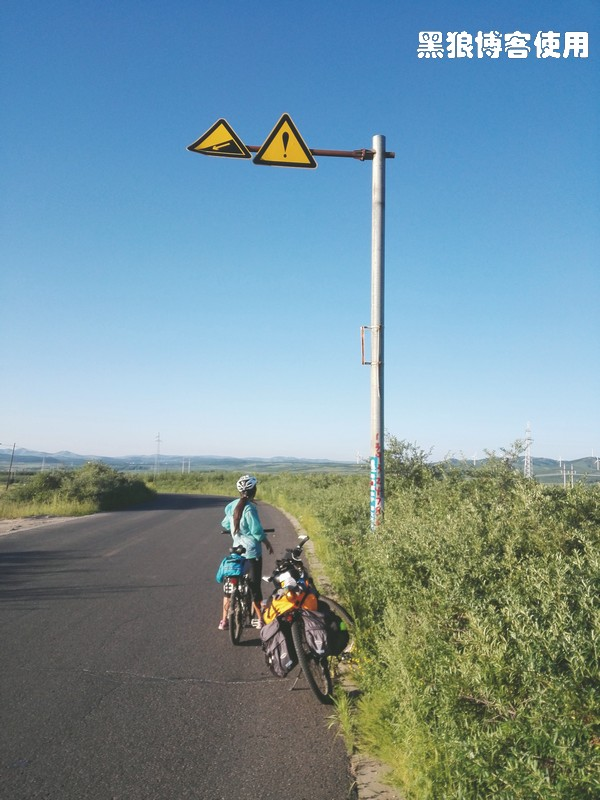

骑向乌兰布统（第八天，机械林场）
黑狼语录：
—— 心情决定了胃口，心情决定了体验。
昨夜住在田园牧歌君御庄园，没有网络没有电视节目，方玉很早就睡觉了。一大早，我叫她起床的时候，提到了自助早餐，她立马就精神了，至少早起了半个小时。
到了餐厅后，方玉彻底崩溃了，她用不敢置信的眼光看着面前的食物，嘴里嘟嘟囔囔地说：“怎么这么大酒店的自助早餐竟然是这样的！太过分了，太过分了！”今天的早餐有：4 种咸菜，小米粥，鸡蛋汤，包子，豆包，花卷，馒头，包子和豆包的馅很小很小。没有她喜欢的面包，没有果酱，没有水果，没有肉，呵呵，这是标准的中国式早餐，不是西餐。
方玉吃早餐时的胃口明显不好，不是食物味道不好，是她的心情不好。她对这个庄园感到彻底失望，痛苦不已、懊悔不已，她要求我换别的地方去吃早餐，被我制止，免费的早餐居然还嫌弃。她昨晚本打算少吃点，留点肚子，没想到今早一点儿也没用上。
今天是 8 月 2 日，骑行乌兰布统的第八天，天气晴。到终点乌兰布统还有 52 公里，应该是个轻松的日子。
方玉的手还是不能并拢，但有了很大的好转，应该是肌肉疲劳所致。昨夜她又在半夜叫醒我，让我帮她看看床上有没有虫子。
早 10:30 出发，来吧，轻松快乐的一天。
路上散落着很多粘上柏油的小石子，自行车轮胎上沾了一圈，骑行时甩得很高，方玉在后面实在受不了了，便由她在前领路。
她还在担心着虫子，有时需要我在她的后背肩膀头发等地方用手摸索一遍才放心。
骑行了 5 公里，居然有个景区收费站，外地人每人 130 元。问售票员骑自行车穿过景区需要票吗？售票员也不确定，让我去问检票员，被告知所有外地人都要买票。又问怎么到乌兰布统，他说可以绕行，大约多走 15 至 20 公里吧。
后来很多当地人都说骑自行车应该是不收费的，如果我不去主动问，直接骑过去，可能就不用绕路了。
多走 20 公里也无所谓，方玉要求节省的钱她用来提高住宿标准。我和方玉往回走，去绕行。大约走了 3 公里后，碰到了一个本地骑摩托车的人，打听有没有绕过收费站的路，他说有很多，然后指引了我们一条路，并说只需多走 3 公里。
我和方玉掉头又往收费站方向骑行，离收费站一公里处，转向了一条有点破败的水泥路。
11:40 这条水泥路，渺无人烟。碰到了一个山神庙，有很多的旗子和红绳。
这条路太静了，不知通向何处，刚才没有问清楚具体的路线是个失误，在导航上，这条路已经要在放大到最大时才能看见，而且导航上还偏移了很多。
11:45 碰到了一辆越野车，司机停下来，我问他前面有收费站吗，他详细地指引了我绕过收费站要走的路线。
没过一分钟，我和方玉就忘记了他说过的地名，懊悔不已，不过，5 分钟后我发现，他说过的话都被我的手机录音了。
11:50 路过一个小村子，想打听如何走，居然没有碰到人。这一段居然没有网络，手机信号也很差，只能依靠嘴巴来问路了。
老司机指引的沙洲野泉指示牌。
12:10 再穿过前面的村子，村子的名称叫新建队，就到了老司机所说的度假村路口，然后再走 5 公里就绕过收费站了。
12:40 马上就走到了度假村路口，刚才一个坡路走得很慢。碰到了两个本地人，我问了问路，他们居然说那边没有什么路，让我又迷茫了起来。两个人说他们去取三轮车，可以帮助我们绕过收费站，我和方玉就在原地等着他们。
15 分钟后，他们回来了，带着我们走相反的方向，去走他们指引的那条路，费了很大的力气，20 分钟后，把我们带到了一个路口，说你们穿过那条沙土路，就会碰到一个度假村，然后就到了那条你们要走的路上。
走在沙土路上，方玉气急败坏，大声批评我不该为了节省一点点钱而绕了这么久，我说：“我当初也以为很容易就绕过去了，你就当做是一种体验吧”。她很讨厌体验这个词。
这段沙土路，两公里左右，却用了至少 50 分钟，而且路上还有标示牌写着： “路上有破胎器，希望您不要穿过此路”。方玉顿时感到恐惧，问我这是什么，不会把脚弄伤了吧，我说没事，应该只是吓唬人的，小心点儿就行了。
14:00 一路安全，没有什么破胎器，终于到了度假村，我和方玉穿过铁丝网到了里面，方玉说饿了，我说：“好吧，就在度假村吃饭”。
方玉点了两个菜，菜的味道还不错，还要了一大盆汤，实在是渴了。这个度假村都是蒙古包式的房间，方玉说她很喜欢，要住在这里，我说时间尚早，还是继续赶路吧。
手机有信号了，但是在百度地图上居然找不到这个度假村，也找不到我们刚刚走过的沙土路。
吃饭的时候，问了服务员，下面还有没有收费站，他说路口就有一个，必须要收费才能过去，方玉鄙视地看了看我，我也觉得一片冰凉直达脚底。
我说：“收费就收费吧，也是一种体验”，方玉说：“我就讨厌你总说什么体验。”
14:50 吃过饭，继续出发。
15:15 走到了现在，居然还没有碰到收费站，难道我们逃票成功了吗？不是说路口就有收费站吗？
15:20 终于确认绕过收费站了，只是在绕的过程中特别考验心态，一是很少能碰见人问路，另一个是不同的人指引的路是不同的，会更加迷茫，最后就是当你饶了半天还是绕不过去，就更加考验心态了。
方玉认为逃票是应该的，因为我们只是路过，景区不应该把路都封起来收费，但是，她认为我不应该为了节省几百块钱而让她绕得这么累。
16:00 到了一个叫牧场的地方，居然非常繁华，比附近的镇子也不差。很多的酒店、饭馆，方玉说：“累了，今晚就在这里休息吧”。我跟当地人打听了一下，离这里 19 公里处的机械林场，和这里一样繁荣。
休息了一会儿，方玉百般不愿地跟我继续上路，走了很远，她还在嘀咕着要回到刚才的牧场。
今天的路，上坡路很多，经常是一个上坡拐过弯后又是一个上坡，骑得很累。下坡路很短，而且一眼就看到了坡底连接着一个很大的上坡。这让我和方玉没有了下坡路的喜悦。太折磨人了，下坡在哪里啊？
18:30 离机械林场已经很近了，终于等到了一个大下坡，为了这个下坡，我们两个都快哭了。休息一下，然后一路下坡。
我又开始在方玉的后面不停地大喊着：“调节档位，注意速度！慢点！再慢点！保持稳定！控制速度！慢点！”
19:15 终于到了机械林场。
19:40 找了五家宾馆，有三家客满，其中一家方玉不满意，最后这家不错，居然还能砍价，住下了。而且，方玉也能配合我砍价了，有进步。
本以为今天是轻松的一天，没想到是最煎熬的一天。为了绕过收费站，节省每人 130 元，我们穿越几个幽静山村，一路艰难终于绕过收费点，到了机械林场，累了，休息，住下。
一路的风景居然是绕路的那一段比较美，只是当时心情较差，无法欣赏当时的美景。整个路线，尽管是在景区内的草原上骑行，但是路两边的树木遮挡了视线，也遮住了景色。
离乌兰布统 17 公里。今天骑行了约 60 公里。
今天对我来说最大的考验是：方玉一会儿说她累了，一会儿说她这里那里又疼了，一会儿说她有点晕想吐，一会儿又说她想要住宿休息，总之她有各种症状，有真有假有夸张，对我的考验是，我要猜测她还能骑行多远，决定在哪里住宿，分辨她语言中的真假与夸张，判断哪些需要立即停下，哪些需要处理，哪些需要一点点安慰。所以，我今天很累，是累心。我需要不停地跟她说话，分散她沮丧的情绪，分散她对虫子的关注，分散她对小食店高档酒店的关注，今天我说话说得累了，晚上实在是不想再说话了。